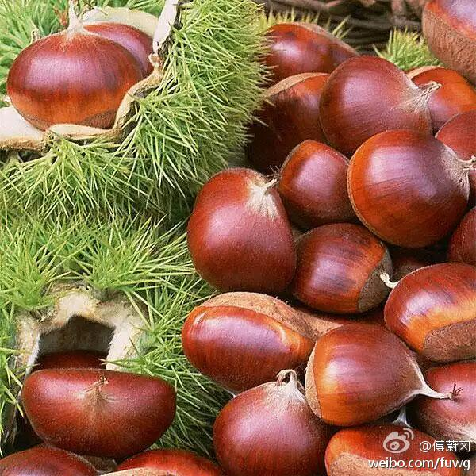

怀柔不是这样。曾捡过路上的板栗，路过农民说地上的也有主，而且被恶主发现的话，会讹钱的。//@shukebeta:是这样的//@王海鹏Seal://@傅蔚冈: 俺们乡下的规矩是，长在树上的板栗只有所有权人才能收获；但是板栗成熟后脱落在地上的谁都可以取。板栗一旦掉到地上就变成了#无主物#，算不得侵犯他人物权。
@傅蔚冈:
今天母亲大人上山捡板栗，一个下午捡了近三斤。为什么这些板栗树的主人不上山打板栗而任凭板栗落在地上？母亲说这是好多年的现象了，很多人外出打工，他们不会为了几个板栗而专门回乡。
- 